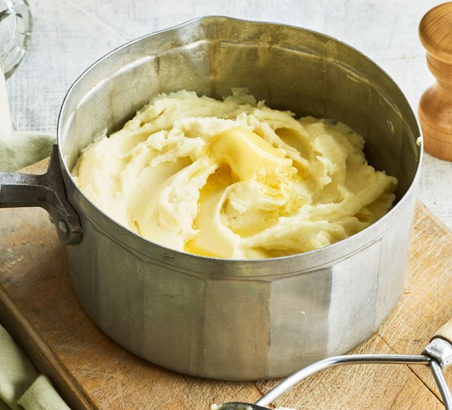

Mashed Potatoes

Description
Quick and easy recipe. All you need is a pot and some potatoes
Ingridients:
- potatoes
- 1/2 tbsp salt
- 1/2 tbsp butter
Steps:
- Peel your potatoes
- Put them in the pot and fill it with water 10mm above the potatoes. Add salt.
- Boil the potatoes until they are soft. You can check their readiness by poking them with a fork. They should feel soft and malleable.
- Pour away the water, leaving only a small amount (around 50ml)
- Mash the potatoes. If they look dry, add more warm water and mash them again. Repeat until the desired consistency is achieved.
- Add 1/2 tbsp of butter and mix again